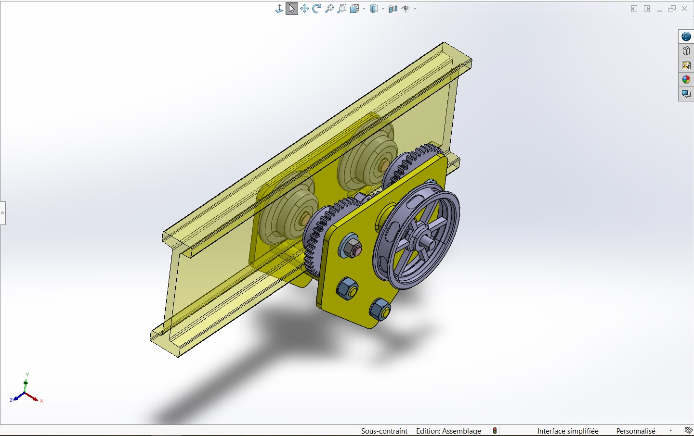

Project Description
This project focuses on the design and assembly of an overhead load handling system developed in SolidWorks. The objective is to create a mechanical device capable of supporting, lifting and transporting heavy loads along an elevated beam structure. The project was developed progressively through multiple assemblies, which were later integrated into a complete mechanical system.
Assembly 1 – Load Attachment System
The first assembly consists of the structure used to attach and support the load. This assembly provides the interface between the transported object and the handling mechanism.
Assembly 2 – Pulley and Gear Transmission System
The second assembly introduces the transmission mechanism composed of a pulley, a driving wheel and a gear element. The motor itself is not part of the design. The mechanism is intended to receive rotational motion from an external motor and transmit it through the wheel and gear system.
Final Assembly
The final assembly combines the previous subsystems into a complete overhead transportation device. Additional components were introduced, including:
The final design operates as a suspended trolley travelling along an overhead beam. Two smooth wheels provide guidance and support while two geared wheels are connected to the transmission mechanism responsible for generating the motion of the system.
Final Assembly Video
Currently in development. The final animation showing the complete system operating on the beam will be added soon.